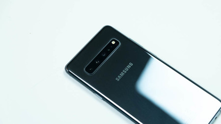
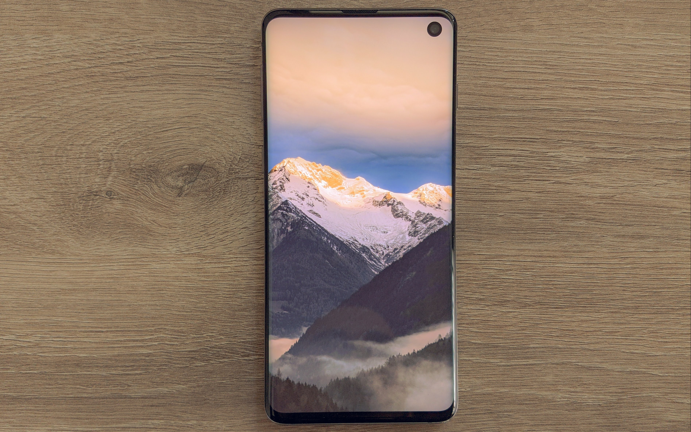
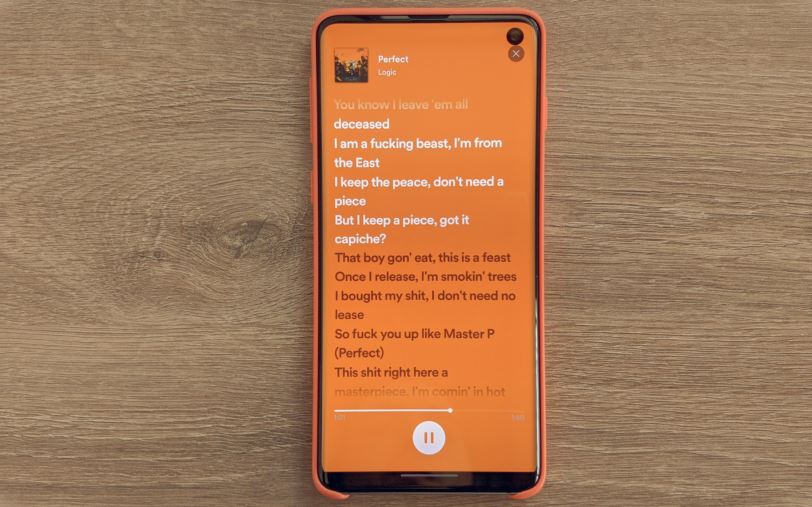

Samsung Galaxy S10: 2 años de uso
Diseño
El Galaxy S10 es el flagship de la firma coreana para el pasado 2019. Y en su diseño dice mucho.
El cuerpo del dispositivo está fabricado en cristal y aluminio, debido a los materiales se siente muy bien en mano, sentis que tenes un smartphone premium desde el primer momento.
Durante estos años he usado el dispositivo con funda por obvias razones. Siento que a la primera caída el resultado sería poco agradable visualmente.
Ergonómicamente hablando, todo está en su lugar. Al ser un móvil compacto podes llegar con facilidad a todos los botones y el feedback de ellos no tiene defecto alguno.
La tapa trasera como se comentó anteriormente es de cristal y tiene un acabado glossy. Eso significa que recoge más huellas que el FBI al año. Me hubiera gustado que la misma tuviera un acabado mate. Hablando de huellas; el lector se encuentra por debajo de la pantalla y es tipo Ultrasónico. Eso significa que realiza un mapeo de la huella en 3D y eso no solo agregara un punto más en seguridad, sino que también este se podrá usar en condiciones normales del día a día; manos mojadas, con polvo y en oscuridad total.
Los problemas llegan en el diseño de la pantalla. Los bordes “Edge''.
Seamos sinceros,tienen un efecto guau. Sentís que tenes un smartphone caro y llama la atención de todo aquel que lo sostiene. Pero fuera de lo guay, 0 practicidad.
El momento de ponerle un protector de pantalla es todo un reto, eso sí. Si lo conseguís.Sin olvidar que los bordes atraen todos los reflejos y en según qué momentos, son muy molestos.
Pero vamos en resumen. Muy premium, muy bonito pero siento que los bordes edge restan más que lo que suman.
Pantalla
Dejando las especificaciones de lado. La pantalla es espectacular, los colores, el brillo en el exterior, es una pantalla que no tiene nada que envidiar con la de los flagships del 2021. Bueno, solo en un apartado.
Colores
Esta Dynamic Amoled de Samsung cubre toda la gama DPI P3. Eso significa que esta puede representar toda la gama de colores existentes. En los ajustes del dispositivo tenemos 2 modos de colores:
-
Vivido: colores al estilo Samsung. Saturados pero sin llegar a una saturación exagerada que reste a la experiencia de usuario.
-
Natural: este modo utiliza la certificación DPI P3. Junto a la tecnología HDR10+ para ofrecer una gama de colores profesional (como en las pantallas XDR de Apple) que es muy útil para crear y editar contenido.
Brillo
El brillo en el exterior es impresionante. Con la posibilidad de llegar a un máximo de 1200 nits (durante un tiempo reducido y/o cuando se reproduce contenido HDR10+) la visualización bajo el sol es perfecta. Podrás tranquilamente mandar mensajes, sacar fotos e incluso ver videos sin problema alguno.
HDR para aburrir
En cuanto a HDR10 +, intentemos una explicación simple. Piénselo de esta manera: incluso un panel HDR puede terminar teniendo un rango dinámico más estrecho del que podría desear dentro de una sola película. El contenido HDR10 viene con metadatos estáticos que especifican cómo asignar ese rango dinámico disponible desde el momento en que inicia la reproducción. Si el rango dinámico de su pantalla es de 16 unidades arbitrarias y su película abarca 20 unidades, perderá 4 al reproducir porque el rango dinámico fue preasignado para el mejor promedio para esta película. Básicamente, HDR10 + utiliza un principio similar para emplear metadatos dinámicos en Dolby Vision.
No les voy hablar de números. Posee un Exynos 9820 (versión que se vende en mi país) que es el soc flagship de Samsung en el 2019. En estos 2 años de uso nunca tuve problemas de rendimiento alguno, nunca me vi limitado con la potencia del dispositivo. Edición de fotos, videos, redes sociales etc. Tengo que admitir que no soy un usuario que juegue en el teléfono. Me descargue un juego simplemente para probar el rendimiento del mismo y no hubo problemas. El Genshin Impact se movió a 60fps constantes.
En su momento del lanzamiento, el S10 salió al mercado con Android 9 bajo la capa de personalización de Samsung llamada OneUI 1.5
Actualmente poseo Android 12 con el parche de seguridad de Enero 2022 y con OneUI 4. Esta es su última actualización de Android oficial, pero posee 1 año más de soporte con parches de seguridad y alguna actualización menor de OneUI
Poco hay que decir de OneUI, yo lo resumiría como un híbrido entre iOS y Android. El rendimiento es bueno, faltaria mas. Pero las animaciones no están del todo pulidas como para llegar a las cotas de fluidez de Android stock y el SO de los de Cupertino. En Android 12 Samsung implementó su versión de la tematización de Material You, la cual funciona muy bien y acierta bastante los colores extraídos del fondo de pantalla.

.jpg)
Camaras
En el apartado fotográfico tenemos mucho de qué hablar, pero trataré de ser lo más resumido posible.
Cuenta con 3 cámaras, las 3 son usables. No tenemos ningún tipo de sensor de relleno como con sensores macros o de profundidad.
Las 3 cámaras dan resultados muy similares en situaciones diurnas. Colores vibrantes que en ciertos casos, se notan demasiado exagerados y es necesario meterle mano en la edición. El HDR funciona correctamente, también agregando un look llamativo a la foto que para según que uso, es muy buscado
El telefoto 2X es bueno, posee enfoque manual y el look en general que ofrece no tiene pegas que destacar. El gran angular igual, mediante actualizaciones Samsung fue mejorando las deformaciones físicas en las esquinas. Actualmente ofrece resultados usables y dignos de un teléfono de gama alta del 2019.

En situaciones nocturnas la cosa cambia un poco. Los resultados de la principal se ve un leve descenso en el detalle que otorga, posee un modo nocturno que realiza un trabajo correcto pero escalones por debajo de los que ofrece el de Google y Apple.
Los otros 2 sensores no son inusables pero sí que se nota un bajón importante en la calidad si es que deseas tomar una foto para alguna especie de trabajo o hobby fotográfico.
El sensor frontal es un sensor de 10mpx, muy buen detalle y en HDR. Cabe aclarar que tuvo una gran mejora respecto al momento de su lanzamiento, en donde ofrecía resultados que en mi perspectiva, eran inferiores.
El video, ahhh… que buen video.
En este apartado Samsung le puede dar clase a cualquier fabricante Android. Con posibilidad para grabar videos a 4K 60fps con Estabilizacion Optica en las 3 cámaras y con HDR10+, hace que podamos grabar videos de muchísima calidad, tan así que pueda ser tomado como una herramienta de trabajo. No como una sustitución a una Sony o Canon de toda la vida, si no como una grabadora de video de respaldo para realizar tomas en concreto.
En la última actualización Samsung añadió la función Director View que da la posibilidad de grabar video con las 4 cámaras (trasera + la frontal) en simultáneo.
Como conclusión pienso que son cámaras dignas de un gama alta del 2019, que no van a dejar disconformes a nadie si das un uso normal para redes y poco más.
Bateria
Este es el apartado al que llamaría el “talón de aquiles” del S10.
Vamos a tener en cuenta el tamaño. A un dispositivo de estas dimensiones no se le puede pedir una batería monstruosamente grande. Creo que da un uso de los 3400mAh correcto. Puedes llegar al final del día con un uso normal. Como dije anteriormente, me considero un usuario normal-intensivo. Mensajes, redes sociales, mails y alguna que otra foto por semana, con este uso tengo la necesidad de cargar el dispositivo a las 8pm, levantándome a las 9am. Cabe destacar que mis hábitos de carga variaron mucho con el tiempo, y cuando llegó a un 30% me pongo nervioso y voy corriendo a meterle una enchufada. Sumado que la carga es de tan solo 15v (1h30 para cargarlo de 0 al 100) creo que la duración de batería es correcta, pero si eres un usuario exigente tendrás que tener un cargador cerca.
Cabe destacar que posee carga inalámbrica “""rápida""” de 10v e Inalámbrica reversible de 5v.
Conclusion
Estoy muy agusto con el dispositivo. Fueron 2 años muy buenos y totalmente conforme con la compra, creo que si se encuentra a buen precio es un teléfono recomendable a comprar teniendo en cuenta que tiene soporte para Android 12 y un año más de parche de seguridad hasta el 2023, sobretodo en países donde Oneplus y Realme son difíciles de conseguir.
Espero que les haya gustado la review. Muchas gracias a todos los que llegaron hasta aca.
Intente hacerla lo mas resumida posible jaja, espero que tengan un muy buena semana, hasta la proxima perretes.